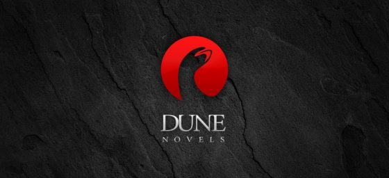

프랭크 허버트의 SF 대하소설 시리즈. 1963년 '어스타운딩 사이언스 픽션(Astounding Science Fiction)'에 6년간 자료 수집 끝에 ‘Duneworld'를 발표하면서 주목받기 시작했으며, 이후 이것을 바탕으로 1965년 '듄'을 출간하면서 유명세를 탔다. 이후 스타크래프트, Warhammer 40,000, 스타워즈 시리즈 등 굵직굵직한 SF 작품들에 굉장히 큰 영향을 준 작품으로 반지의 제왕과 유사하게 자기 작품에 굉장히 지배적인 영향력을 끼쳤다 평가받는다.
